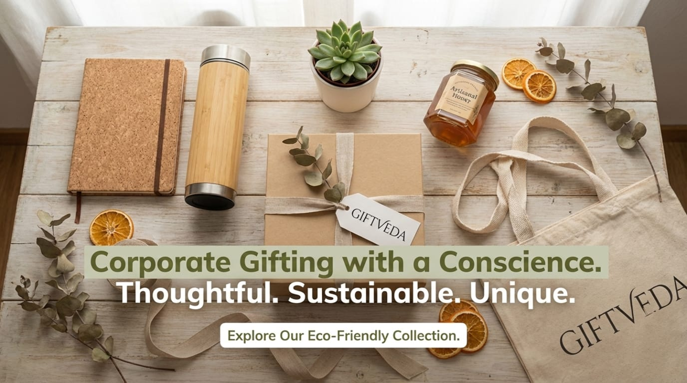

In today's corporate world, sustainability is reshaping how we approach office environments. Eco-friendly desk accessories and green corporate gifting are gaining traction as businesses prioritize reducing their environmental footprint while enhancing workspace functionality. These sustainable office gifts, made from recycled materials or biodegradable components, not only promote employee well-being but also align with global efforts to combat climate change.
As remote and hybrid work persists, upgrading desks with thoughtful, planet-friendly items can boost productivity and morale without excess waste.
Adopting sustainable desk upgrades offers multiple advantages for companies and individuals. Environmentally, they reduce plastic use and support ethical sourcing, contributing to a lower carbon footprint.
For businesses, such initiatives can improve brand image and employee retention, with eco-positive actions leading to higher morale and customer loyalty. On a practical level, these items often prove durable and cost-effective over time, saving resources in the long run.
Overall, green office supplies foster a healthier, more engaged workforce by blending functionality with responsibility.
Opt for notebooks made from recycled paper or plant-based covers, paired with biodegradable pens. These items minimize deforestation and plastic pollution while keeping notes organized.Consider desk essential that include such sustainable options for everyday use.
Eco-conscious tech like wireless chargers from recycled plastics or bamboo stands for devices reduce electronic waste while supporting modern workflows sustainably, ensuring gadgets stay powered without environmental harm. Explore tech hampers for ideas that blend innovation with green materials.
Cork or recycled wood desk organizers keep clutter at bay while being fully compostable. They provide stylish storage for pens, phones, and notes while promoting an eco-friendly setup. Items from eco-friendly hampers often feature these durable, natural designs.
Incorporate plant-based items like reusable water bottles or essential oil diffusers made from sustainable sources to enhance desk wellness and encourage hydration and stress relief. tying into broader green corporate gifting trends. Look into wellness hampers for biodegradable options that prioritize health and the planet.
Looking ahead, 2026 trends emphasize hyper-personalization with AI for tailored eco-gifts, alongside a shift to reusable and ethically sourced items like plant-based swag. Sustainability is now a baseline, with minimal packaging and experiences over objects gaining popularity.
Businesses are focusing on durable, recyclable materials to meet employee expectations for responsible practices.
Sustainable desk upgrades through green office gifts represent a smart evolution in corporate culture, balancing productivity with planetary care. By choosing recycled or biodegradable items, companies can create meaningful, eco-positive impacts.Whether through branded gifts or custom hampers, these choices ensure desks remain functional and forward-thinking.
Corporate Office :
195, Tarun Enclave,
Pitampura,
New Delhi – 110034
Email :
info@giftveda.com
Phone : 9810115955